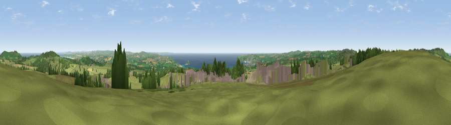

Viewpoint near Towednack
#1206 in England · top 5% of its area beats it · near Towednack · open accessWhere it is
The exact computed spot (SW 48562 34912). Click the marker for map links.
Public access: this spot lies on mapped open-access land (CRoW Act 2000) — you may roam here on foot. Computed from Natural England's CRoW access layer and OpenStreetMap rights of way — not the legal definitive map. Always verify locally.
The view, rendered

A 360° render of this exact spot computed from the terrain model, tree cover and land cover — summer colours, afternoon light, calibrated against photographs of famous viewpoints. Real trees, hedges and buildings will differ in detail.
The panorama
Grey silhouette: terrain skyline in each direction (720 bearings, Earth curvature and refraction included). Dashed green: skyline with trees (+15 m) and buildings (+8 m) as obstacles. Blue strip: how far the ground is visible on each bearing.
Where the view opens
Wedge length = distance to the farthest visible ground on that bearing (vegetation-aware). Rings at 10, 25 and 50 km.
What fills the view
58% grassland · 11% woodland · 11% water · 8% cropland · 7% bare ground · 4% built-up
Angular shares of the visible panorama (visual magnitude), not map area. Landscape diversity 0.58 (0–1 Shannon).
Key numbers
More beautiful places nearby
The staircase of upgrades: each row has a higher view potential than everything closer. Driving times are estimates from straight-line distance, calibrated against real road routing — check an actual route before setting out.
| Place | Direction | Drive | Score |
|---|---|---|---|
| Viewpoint near Towednack | NNW · 4 km | ~9 min | 83.2 |
| Rosewall Hill | N · 4 km | ~10 min | 88.0 |
| Viewpoint near Combe Martin | NE · 158 km | ~181 min | 88.9 |
| Holdstone Hill | NE · 160 km | ~182 min | 90.2 |
| The Knoll | ENE · 211 km | ~228 min | 91.0 |
50.16081, -5.52180 · source: screening · position refined by local search. Computed location — check access rights before visiting.